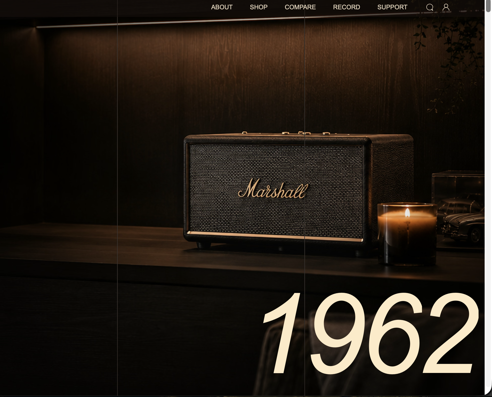
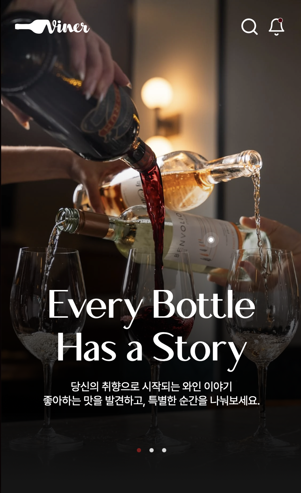
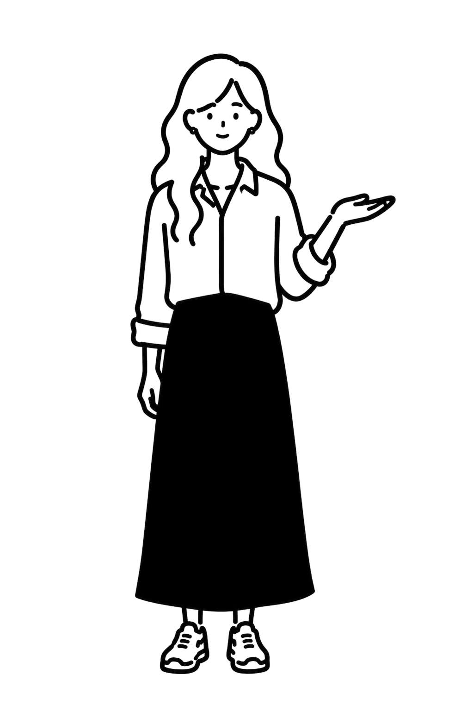
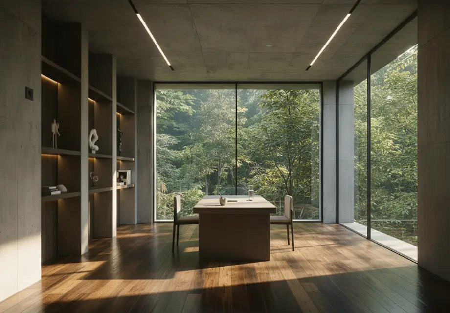
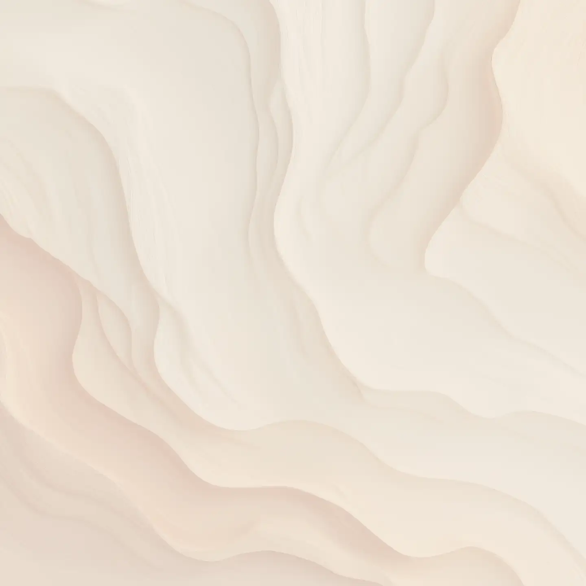

for Makers
CHA KYEONG AH
 P.
P.
 P.
P.

I.
I.
Precedes
Entry / Seek Admission
Still Becoming,
Still Me


편집디자인 수업에서 처음 웹페이지를 만들어보면서, 화면 하나를 구성하는 일에 재미를 느꼈어요. 그 흥미를 따라 웹디자인을 계속 찾아보다가 UX/UI라는 분야를 알게 됐고, 자연스럽게 관심을 갖게 됐습니다.
일을 시작할 때는 항상 전체 흐름을 먼저 봐요. 그리고 UX를 설계할 때는 사용자가 가장 불편하게 느끼는 지점이 어디인지부터 찾습니다. 그 지점을 찾고 나면, AI를 최대한 활용해서 더 편안하고 안정적으로 느껴지는 화면으로 풀어내는 게 제 작업 방식이에요.
최근에는 AI로 원하는 인터랙션을 직접 구현해볼 수 있다는 점에 특히 흥미를 느끼고 있어서, 디자인과 구현을 함께 다루는 방향으로 관심을 넓혀가는 중입니다.
You Won’t Find Them on a Map
These places aren’t broadly announced.
There are 7 in operation at the moment, each established within a specific context and maintained with discretion. Their presence is intentional, shaped by location rather than visibility. Access is considered, not assumed.
Nearby / Seek Admission

These items are formed
within the places themselves.
Each originates on site, shaped by material, process, and circumstance. Once completed, they leave their point of origin and circulate independently.
Explore Objects
These items are formed within
the places themselves.
Each originates on site, shaped
by material, process, and
circumstance.
Once completed, they leave
their point of origin and circulate
independently.

Item Shown
at Point
of Origin.
Places and Items are not separate. Each item originates within a specific place, shaped by its conditions, materials, and use.
Once removed, the item continues independently, carrying its point of origin without representing it directly.
Now Forming

Lower Hall has entered active operation and is now maintained on a regular cycle.
Item 02 has been released externally and is now circulating beyond its point of origin.
Work continues on Interior 05. Conditions are being refined prior to use.
- 1
- 2
- 3
- 4
- 5
